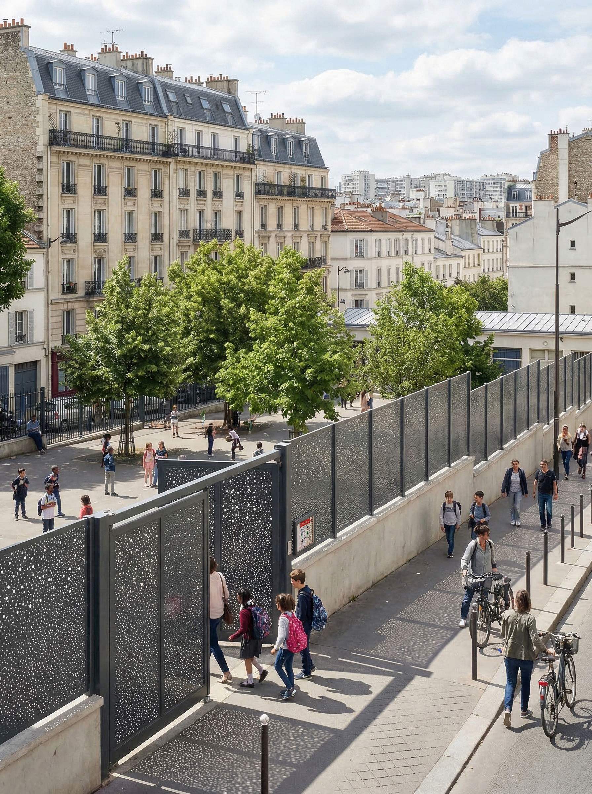
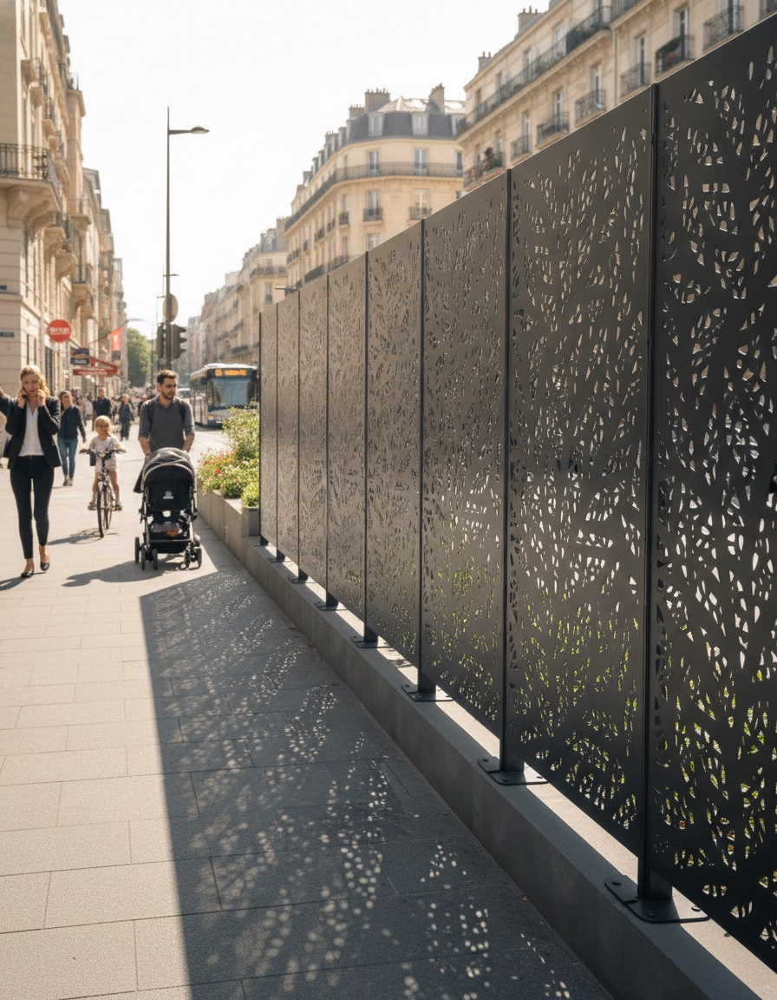
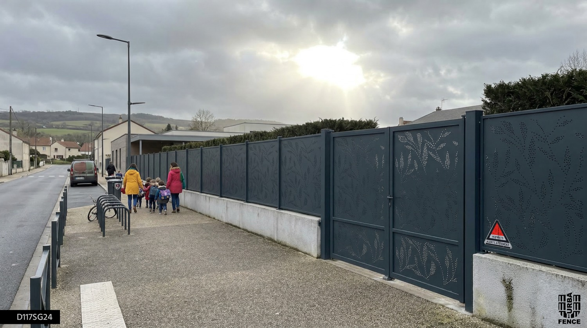
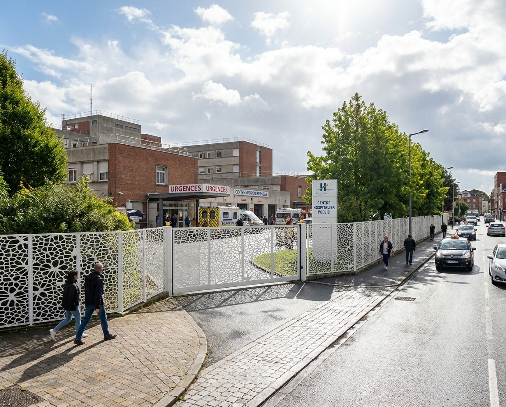
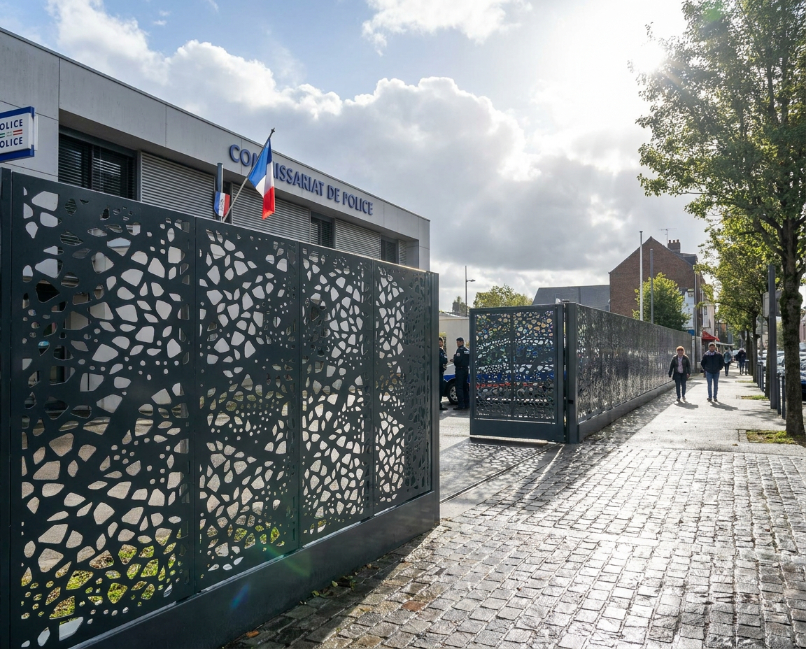

Otto Lem
Voir le motif
Urbafence, c'est la clôture occultante en tôle perforée, fabriquée sur mesure. Avec le Cercle Partenaire, profitez de la remise pro, de prix bloqués et d'un configurateur en ligne.
Clôture occultante sur mesure. Cercle Partenaire : remise pro, prix bloqués et configurateur en ligne.

Une solution Dampere en tôle perforée, pensée pour les projets où l'intimité, la sécurité visuelle et le rendu architectural deviennent essentiels.
Vous gardez vos solutions habituelles — Urbafence intervient quand le projet demande plus d'occultation.

Des conditions concrètes pour travailler plus simplement avec Urbafence.
Appliquée automatiquement dès 1 500 € de panier.
Une base tarifaire stable pendant la validation du projet.
Des réponses plus rapides sur vos configurations et délais.
Chiffrage, options et mise en production simplifiés.
Un support papier pour vos rendez-vous client.
Des rendus qualitatifs dans un cadre économique maîtrisé.
Dimensions, pose, motif et couleur : chaque projet est préparé avant production.
Exemples de teintes — autres finitions possibles selon projet.
Le niveau d'occultation dépend du motif choisi.
Motifs indicatifs — choix final selon la gamme et le projet.
Une sélection de remplissages — chaque motif renvoie vers sa page dédiée.
Vous configurez votre projet en ligne, validez les éléments, puis la fabrication démarre.
Dimensions, pose, motif et couleur dans le configurateur Urbafence.
En ligneLe projet est vérifié et confirmé avant lancement.
Avant lancementAprès validation, comptez environ 4 semaines de production.
≈ 4 semainesDélai indicatif selon configuration et charge atelier.

Le Cercle Partenaire valorise les professionnels qui intègrent régulièrement Urbafence à leurs projets. Un programme simple : vos avantages sont activés, vos conditions visibles en ligne, et vos démarches vont plus vite.
Vous gardez vos habitudes : le Cercle ajoute simplement des avantages à vos projets Urbafence.
Des projets où l'occultation et le sur-mesure font la différence.

Type · École Type · Vélo
Type · Vélo

Type · Santé
Type · Public Type · Local
Type · Local
 Type · Linéaire
Type · Linéaire
Des conditions valables 1 an, reconductibles avec 3 commandes sur l'année.
Deux façons d'activer votre statut partenaire, au choix :
Vos conditions s'appliquent sur tous vos projets Urbafence, au rythme de vos chantiers.
3 commandes sur l'année suffisent à conserver vos conditions partenaires pour les 12 mois suivants.
Activez votre accès et profitez de vos conditions dédiées.
Mon compte Urbafence → Accédez à votre espace · par e-mail ou via le chatbot